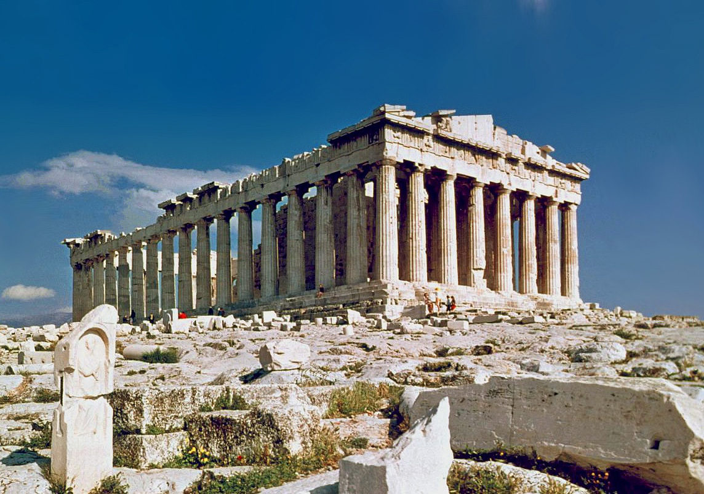
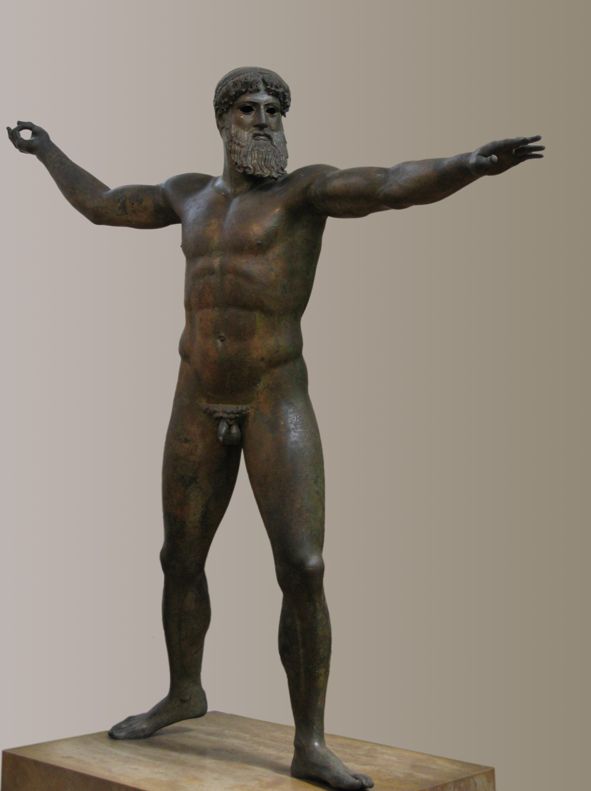
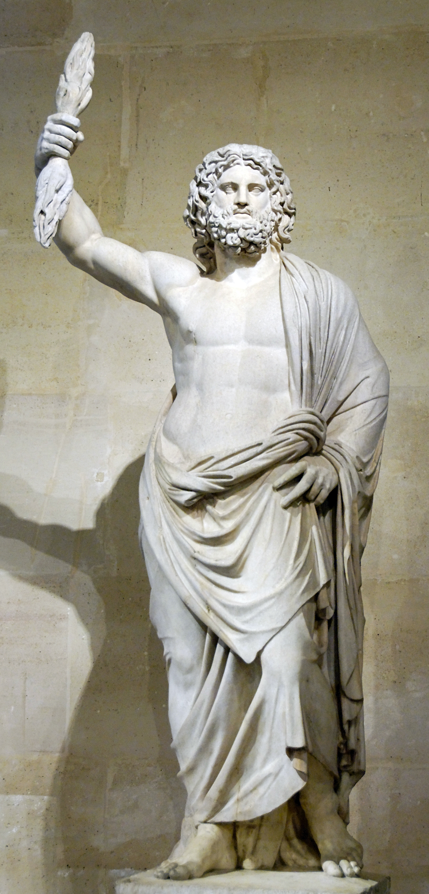
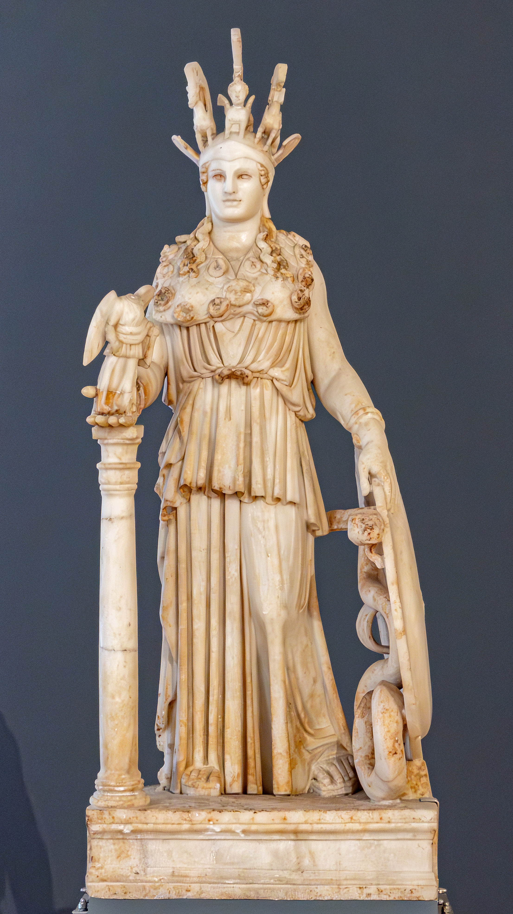

Acrópole de Atenas
Partenon
Templo dedicado a Atena, erguido na Acrópole de Atenas e marco da arquitetura grega clássica.
As divindades gregas em suas histórias, domínios e representações artísticas.
As imagens enviadas mostram o Partenon e duas esculturas antigas. Toque ou clique nos cartões para conhecer os detalhes.

Templo dedicado a Atena, erguido na Acrópole de Atenas e marco da arquitetura grega clássica.

A identidade da figura é debatida: sem o atributo que segurava, pode representar Zeus lançando um raio ou Poseidon com o tridente.

Figura masculina idealizada, com manto e gesto elevado. A identificação exata depende da obra e de seus atributos originais.

Protetora de Atenas, associada à sabedoria, à estratégia e às artes da cidade.
Importante: os anexos anteriores eram atalhos de internet (`.url`), não os JPG. Para as fotos aparecerem, coloque os arquivos originais em `assets/images/` com os nomes `partenon.jpg`, `poseidon.jpg`, `zeus.jpg` e `atena.jpg`.
| Divindade | Domínio | Símbolos |
|---|---|---|
| Zeus Ζεύς | Céu, trovão e soberania | Raio, águia, cetro |
| Hera Ἥρα | Casamento e realeza | Pavão, diadema |
| Poseidon Ποσειδῶν | Mar e terremotos | Tridente, cavalo |
| Atena Ἀθηνᾶ | Sabedoria e estratégia | Coruja, oliveira, elmo |
| Apolo Ἀπόλλων | Música, profecia e cura | Lira, arco, louro |
| Ártemis Ἄρτεμις | Caça e vida selvagem | Arco, cervo, lua |
| Afrodite Ἀφροδίτη | Amor e beleza | Pomba, concha |
| Ares Ἄρης | Guerra | Lança, escudo |
| Hefesto Ἥφαιστος | Metalurgia e artesanato | Martelo, bigorna |
| Hermes Ἑρμῆς | Mensagens e viagens | Caduceu, sandálias aladas |
| Deméter Δήμητρα | Agricultura e colheita | Espiga, tocha |
| Dioniso Διόνυσος | Vinho e teatro | Tirso, videira, máscara |
Nota: listas de doze olímpicos variam entre fontes; Héstia e Dioniso, por exemplo, alternam em algumas tradições. Hades reina no mundo inferior e normalmente não integra o grupo dos deuses olímpicos.